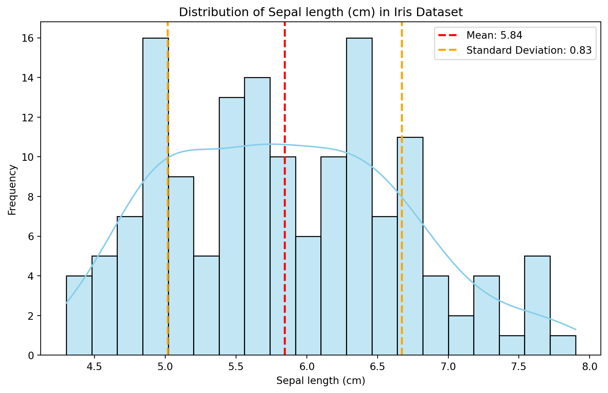
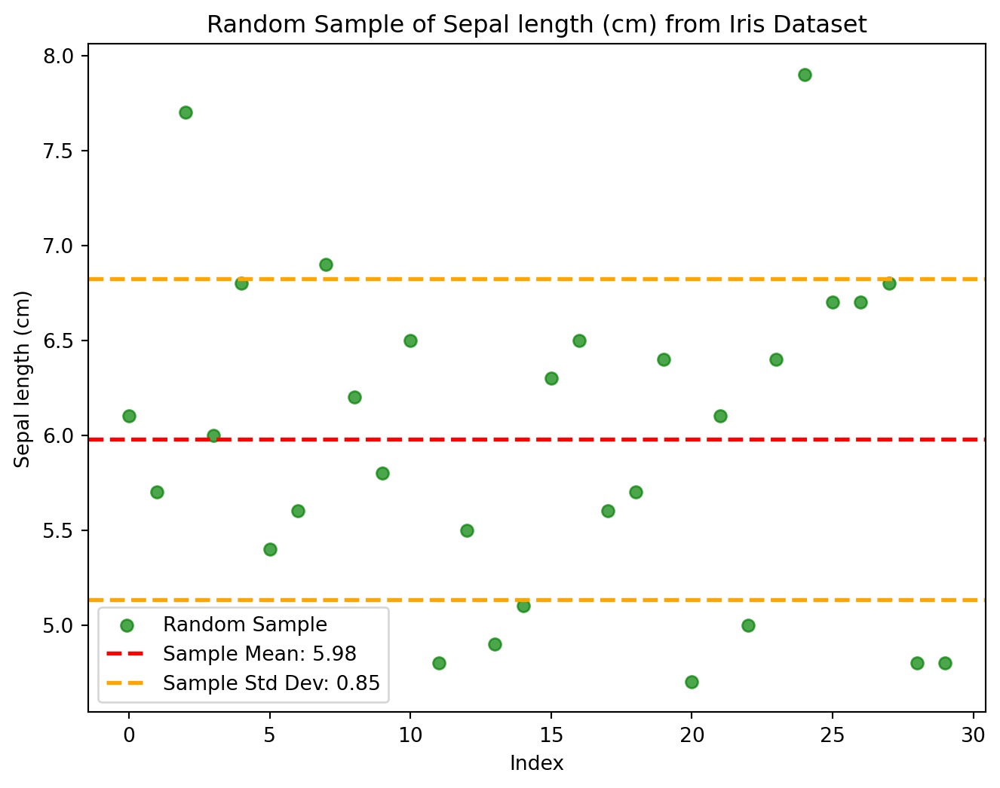

import pandas as pd
from sklearn.datasets import load_iris
import matplotlib.pyplot as plt
import seaborn as sns
import numpy as np
# Load Iris dataset
iris = load_iris()
# Create a DataFrame from the Iris dataset
iris_df = pd.DataFrame(data=iris.data, columns=iris.feature_names)
# Select a feature for analysis (e.g., Sepal Length)
feature_name = 'sepal length (cm)'
selected_feature = iris_df[feature_name]
# Calculate basic statistics
mean = selected_feature.mean()
std_dev = selected_feature.std()Unraveling the Secrets of Iris Data: Exploring Feature Distributions and Probabilities in the Context of Classification
Introduction
Probability theory and random variables play a pivotal role in understanding data distributions and their characteristics. In the realm of data analysis, understanding the distribution of features is crucial for various tasks, including classification. By exploring the inherent structure and probability of data points, we gain valuable insights that can inform effective model building and interpretation of results.
Exploring the Iris Dataset
This blog post dives into the analysis of the Iris dataset, focusing on the “sepal length” feature as a representative example. We will delve into descriptive statistics, visualization techniques, and probability calculations to uncover the hidden patterns within this popular dataset.
Understanding Probability Theory and Random Variables
Before proceeding, let’s briefly touch upon the concepts of probability theory and random variables.
Probability theory
Deals with the likelihood of events occurring. Quantifies uncertainty and randomness. Concepts like probability distributions, conditional probabilities, and expected values play crucial roles in data analysis.
Random variables
Represent numerical quantities associated with random outcomes. Can be discrete (e.g., number of heads in a coin toss) or continuous (e.g., height of a person). Understanding their properties (mean, variance, distribution) helps us characterize the underlying data.
Analyzing the Sepal Length Distribution
The provided Python code loads the Iris dataset and calculates basic statistics like mean and standard deviation for the “sepal length” feature. This provides initial insights into its central tendency and variability.
Visualization with Histograms
A histogram is generated to visually represent the distribution of sepal lengths. This allows us to identify the overall shape of the distribution, such as its symmetry, skewness, and spread. Additionally, the code overlays vertical lines indicating the calculated mean and standard deviation, providing a visual reference point for interpretation.
# Plotting a histogram to visualize the distribution
plt.figure(figsize=(10, 6))
sns.histplot(selected_feature, kde=True, color='skyblue', bins=20)
plt.axvline(mean, color='red', linestyle='dashed', linewidth=2, label=f'Mean: {mean:.2f}')
plt.axvline(mean + std_dev, color='orange', linestyle='dashed', linewidth=2, label=f'Standard Deviation: {std_dev:.2f}')
plt.axvline(mean - std_dev, color='orange', linestyle='dashed', linewidth=2)
plt.xlabel(feature_name.capitalize())
plt.ylabel('Frequency')
plt.title(f'Distribution of {feature_name.capitalize()} in Iris Dataset')
plt.legend()
plt.show()
Exploring a Random Sample
To gain deeper insights, the code generates a random sample of 30 data points from the “sepal length” feature. By comparing the sample mean and standard deviation to the overall values, we can assess whether the sample is representative of the entire population or if it exhibits any biases.
# Generate a random sample of the selected feature
random_sample = selected_feature.sample(n=30, random_state=42)
# Calculate properties of the random sample
sample_mean = random_sample.mean()
sample_std_dev = random_sample.std()
# Plotting the random sample
plt.figure(figsize=(8, 6))
plt.scatter(range(len(random_sample)), random_sample, color='green', label='Random Sample', alpha=0.7)
plt.axhline(sample_mean, color='red', linestyle='dashed', linewidth=2, label=f'Sample Mean: {sample_mean:.2f}')
plt.axhline(sample_mean + sample_std_dev, color='orange', linestyle='dashed', linewidth=2, label=f'Sample Std Dev: {sample_std_dev:.2f}')
plt.axhline(sample_mean - sample_std_dev, color='orange', linestyle='dashed', linewidth=2)
plt.xlabel('Index')
plt.ylabel(feature_name.capitalize())
plt.title(f'Random Sample of {feature_name.capitalize()} from Iris Dataset')
plt.legend()
plt.show()
Calculating Probabilities
Furthermore, the code calculates the probability of observing a value greater than the mean in the “sepal length” feature. This provides a quantitative measure of the likelihood of encountering such data points, which can be informative in various contexts.
# Calculate probabilities
# For example, probability of observing a value greater than the mean in the selected feature
probability_greater_than_mean = np.sum(selected_feature > mean) / len(selected_feature)
print(f'Probability of observing a value greater than the mean: {probability_greater_than_mean:.2f}')Probability of observing a value greater than the mean: 0.47This above analysis includes
Visualization of the selected feature’s distribution with a kernel density estimation plot.
Creation and visualization of a random sample from the selected feature, highlighting the sample mean and standard deviation.
Calculation of probabilities based on the distribution, such as the probability of observing a value greater than the mean.
These analyses offer a deeper understanding of probability distributions, random variables, and the statistical properties of the selected feature within the Iris dataset. Adjustments can be made to further explore different features or conduct additional probability-related analyses based on your interest.
Implications for Classification
Understanding the distribution of features and calculating their probabilities play a significant role in classification tasks. These insights can help us:
Choose appropriate classification algorithms based on the data characteristics. Evaluate the performance of classification models and identify potential biases. Interpret the results of classification models in the context of the underlying data distribution.
Conclusion
Probability theory and random variables offer powerful tools to explore datasets. Through this analysis of the Iris dataset’s Sepal Length feature, we’ve explored distributions, random sampling, and probability calculations, providing insights into data characteristics and statistical properties.
Exploring other features and conducting more extensive probability-related analyses can further enhance our understanding of the Iris dataset and its underlying patterns.
This blog post encapsulates the analysis, insights, and implications of exploring probability distributions and random variables within the context of the Iris dataset, offering a comprehensive understanding of these fundamental concepts in data analysis and statistics.